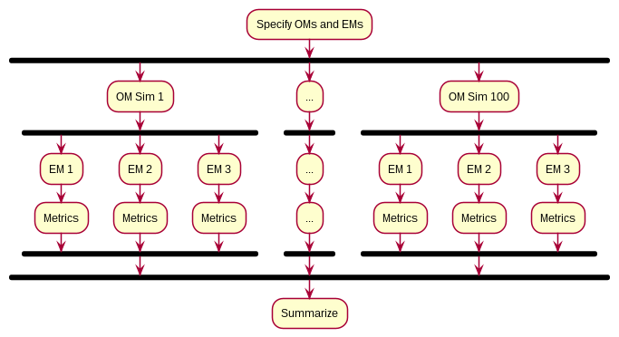
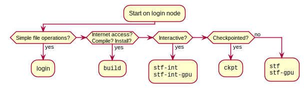

NOTE: This information was accurate as of early 2020, but is now (April 2022) slightly out of date; e.g. the klone cluster is now available and interactive nodes are no longer a separate partition.
Use Hyak when you need additional resources
- More processing power
- Models or data don’t fit in RAM
Think carefully about how to use Hyak
- Do you really need to use it?
- How can you use it efficiently?
Parallelization
- Which steps are independent?
- Which steps are bottlenecks?
- How to minimize overhead?
Example: Simulation study
- Specify operating and estimation models
- Simulate 100 operating models
- Fit 300 estimation models
- Calculate metrics
- Summarize results
Which steps are independent? Which step is the bottleneck? Are there steps that could be done together?
Example: Simulation study

Parallelization strategies
- What step takes most time?
- Which step is performed most often?
- Are there natural save points?
- Which computations can be reused?
- Are there other limitations?
Checkpointing
- Save progress
- Restart from saved position
- Use the
ckptqueue
What is Hyak?
- Mox
IKT
Logging in
ssh jkbest@mox.hyak.uw.eduKeep your phone handy for 2FA!
How to choose a node type

Request an interactive node
buildnode:
srun -p build --mem=10G --time=1:00:00 --pty /bin/bashstf-intnode:
srun -p stf-int -A stf --cpus-per-task=28 --mem=120G\
--time=1:00:00 --pty /bin/bashRelevant SLURM arguments
srun- Request in interactive node
sbatch- Submit a batch job
-p- Partition; node type to use
-A-
Account; usually
stf --cpus-per-task- Threads per program
--tasks-per-node- Processes to run on each node
--nodes- Number of nodes to request
--mem- Amount of RAM to request
--time- Time to reserve
--pty- Program to start
Connecting a second time
To see which node you are using:
squeue -u jkbest JOBID PARTITION ... NODELIST(REASON)
1838469 build ... n2232From login node:
ssh n2232Now monitor usage with e.g. htop
Modules
Key commands:
module --help- Reminders
module avail- List available modules
module apropos srchstr-
Search modules for
srchstr module load abcdef-
Attach module
abcdef module unload abcdef-
Detach module
abcdef
Using a build node
- Request a
buildnode. - Load the appropriate R module (or have your custom version accessible).
- Run
Rat the command line to open R. - Use
install.packagesto install what you need.
Using an stf-int node
- Request an
stf-intnode (see above). - Load the R module.
- Open R and run:
library(TMB)
runExample("simple")Submit a batch job to stf
The “driver script” runs your analysis, including loading packages, reading data, and sourceing other files with functions etc. The SLURM script specifies the resources you need and how to run your driver script. Examples of scripts that I have used:
Note that these are just example scripts, I haven’t made them self-contained so they won’t run for you. That said, the fitsims.slurm file should be a good starting point for your own SLURM scripts. In the directory with the SLURM script, you can submit the job:
sbatch fitsims.slurmTips:
- Write a single “driver” script
- Use
Rscriptto run the driver script
There are three places to store files
Home
\home\xyz- Persistent, but low performance
- Configuration files
GScratch
\gscratch\stf\xyz- Create your own directory.
- 30-day limit
- Scratch directory for computations
Lolo
- Long-term tape storage
- Must bundle files together
How to transfer files
sftp-
Connect to
mox.hyak.uw.edu sshfs- Attach to local file system
git- Code managed in e.g. a GitHub repo
Advanced usage
- Add module imports to your
.bashrcfile - Add other customizations
- Set up
sshfs - Compile your own R with MKL
- Write your own module for everyone to use